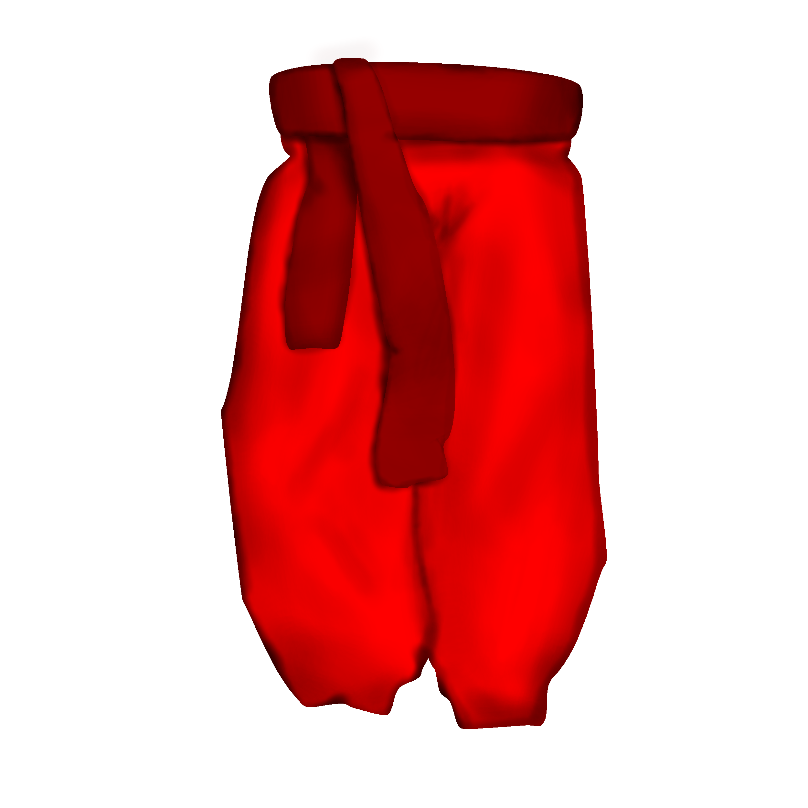

Запоріжжя
У Запоріжжі найпоширенішими були звичайні "класичні" червоні шаровари. Пояс також був чероним, тому що це відповідало їхній формі.
Шаровари такого типу були популярні досить довгий період, однак після знищення козацтва, саме така кольорова гамма перестала користуватися попитом сред людей як повсякденний одяг, однак закарбувалося у людей як традиційний одяг українців. Саме такі шаровари і асоціюються у більшості людей з традиційним одягом України.